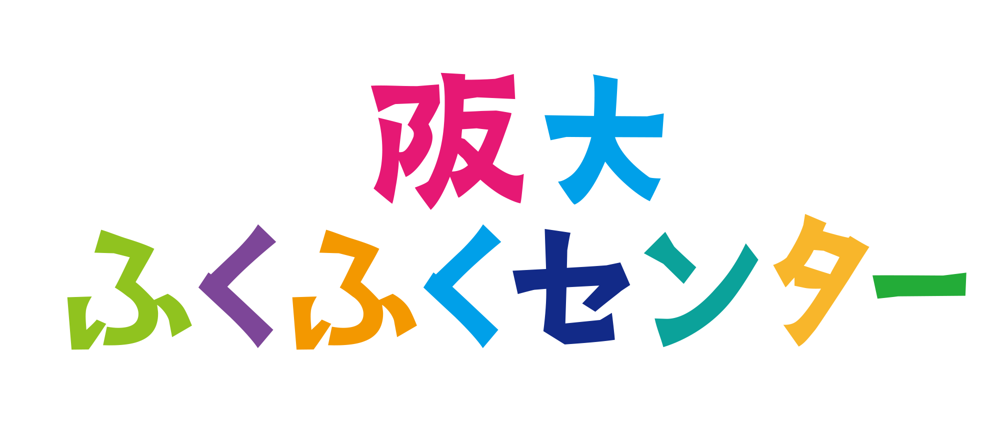
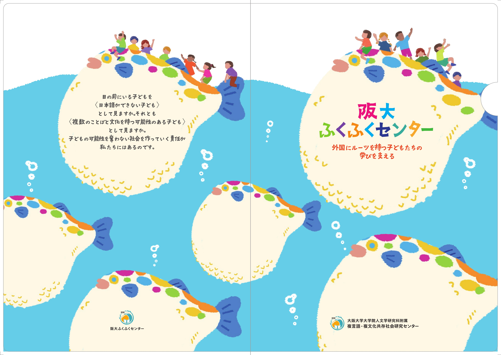
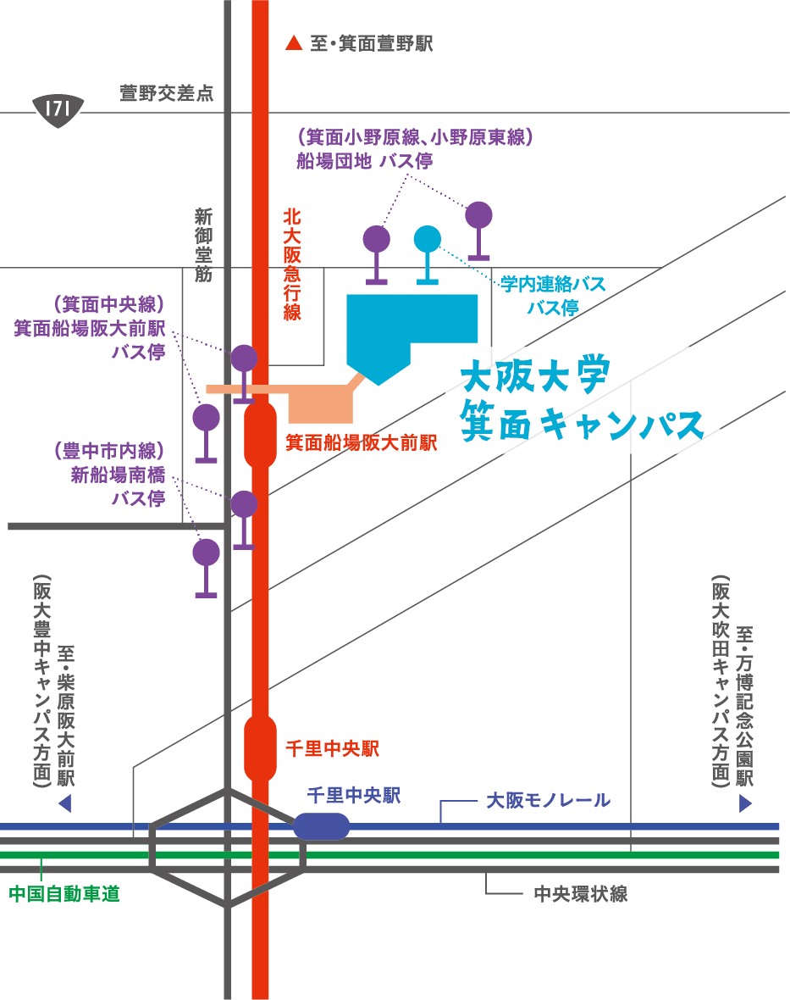
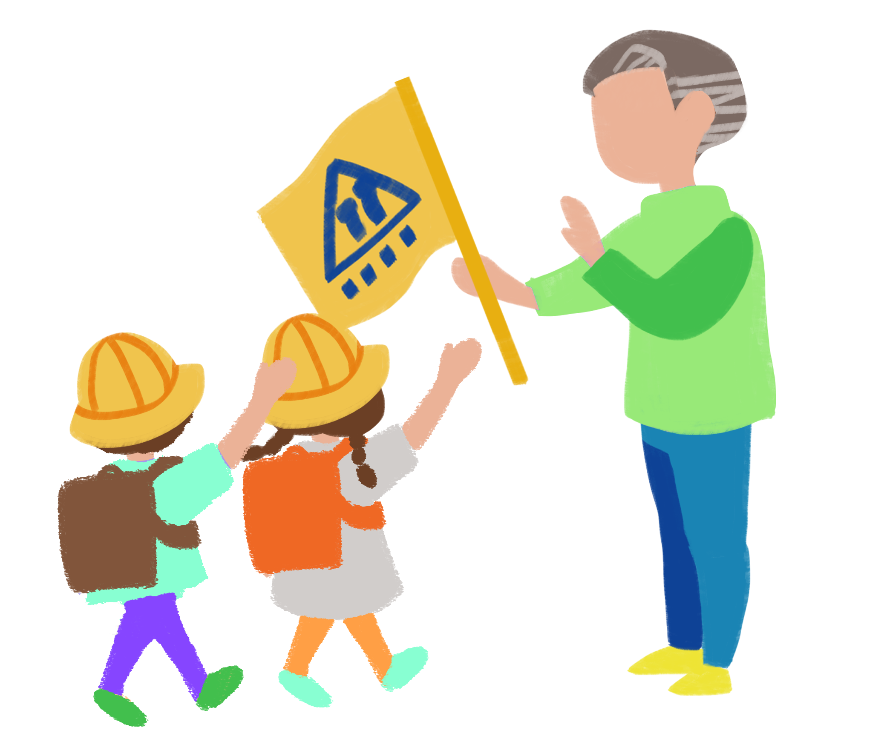
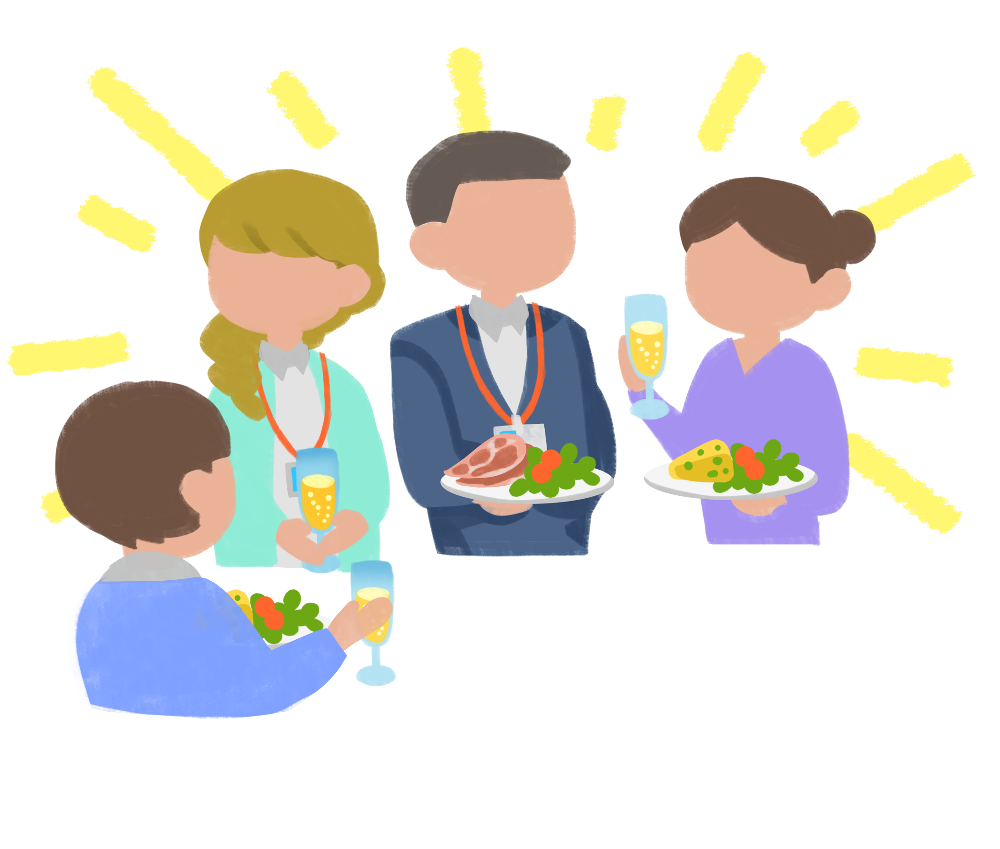
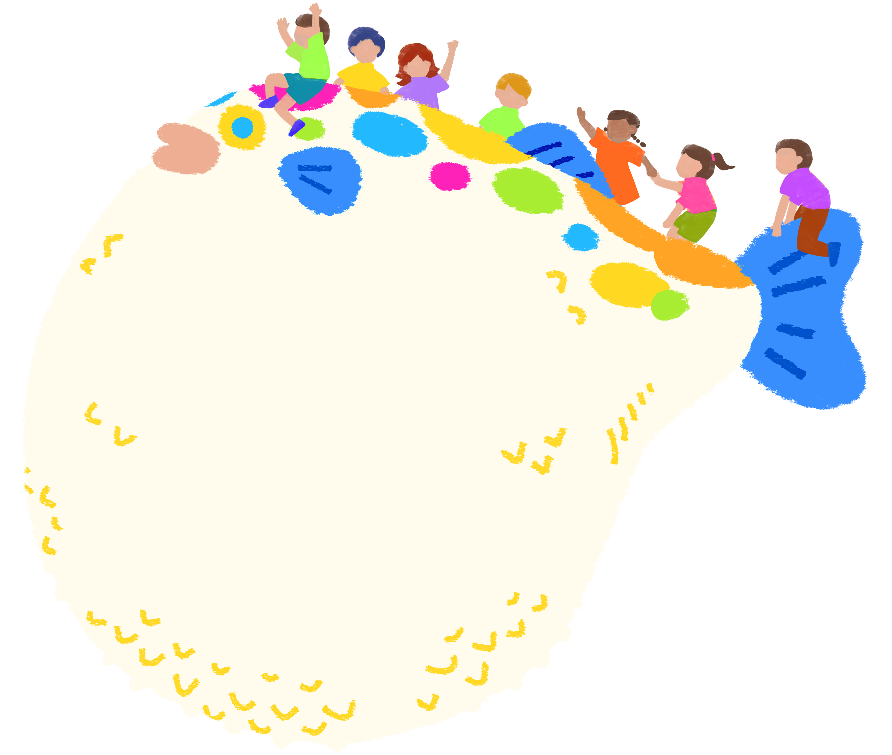

全ての方Everyone

このページはプレビュー用です。
合言葉をご存じの方のみご覧いただけます。This page is a private preview.
Only those with the passphrase may enter.
大阪大学大学院人文学研究科附属
複言語・複文化共存社会研究センター、
通称「阪大ふくふくセンター」。
外国にルーツを持つ子どもたちの学びを支える、2023年設立のセンターです。
Diversity and Community Engagement Research Center
(University of Osaka Fukufuku Center),
a research center at the Graduate School of Humanities, University of Osaka.
Established in 2023 to support the learning of children with foreign roots in Japan.

大阪大学大学院人文学研究科附属複言語・複文化共存社会研究センター（以下、阪大ふくふくセンター）は、「外国にルーツを持つ子どもたち」への支援活動を中心に行うため、2023年4月1日に設立されました。設立以来、個人・団体を問わず、多くの方々にご支援、ご協力いただいています。
2024年6月末時点で、在留外国人数は約360万人となりました。それに伴い「外国にルーツを持つ子どもたち」の数も増え続けています。それは、日本社会が多言語・多文化との共存を意識せざるを得ない状況となっていることを物語っており、私たち阪大ふくふくセンターの存在がますます注目されている所以でもあります。その活動をより充実したものにするためには、これまで行ってきたことを振り返り、実践の中で培ったノーハウを整理し、学術的観点からの知見も含めつつ、今後の活動を行っていくことが重要だと思います。その際には、25地域の言語と文化を教育・研究する外国語学部・人文学研究科外国学専攻/日本学専攻応用日本学コースの知見を最大限に活かしていくことが一つの鍵となるでしょう。
ご協力いただいているステークホルダーの方々との連携をより強化しながら、「外国にルーツを持つ子どもたち」が自らのルーツに誇りを抱きつつ日本社会で生活できるよう、また、日本に住む誰もが「複言語・複文化」を実践できるよう、その環境づくりに貢献したいと思います。
阪大ふくふくセンターの活動に対して、引き続き多くの方からのご理解、ご協力、ご支援を賜りたく、よろしくお願いいたします。
The Diversity and Community Engagement Research Center at the Graduate School of Humanities, University of Osaka (hereafter, "Fukufuku Center") was established on April 1, 2023, to focus on supporting children with foreign roots in Japan. Since our founding, we have been supported by many individuals and organizations.
As of the end of June 2024, the number of foreign residents in Japan had reached approximately 3.6 million, and the number of children with foreign roots continues to grow. This reflects a society that must increasingly engage with multilingual and multicultural coexistence — and is the very reason why our center's role is receiving growing attention. To make our work more effective, we believe it is essential to reflect on what we have done, organize the know-how cultivated through practice, and ground our future activities in academic insight. In doing so, we intend to draw fully on the knowledge of the School of Foreign Studies and the Graduate School of Humanities — where 25 regional languages and cultures are taught and researched.
Strengthening our collaboration with the stakeholders who support us, we hope to contribute to an environment where children with foreign roots can live in Japanese society with pride in their roots, and where everyone living in Japan can embrace multilingual, multicultural life.
We look forward to your continued understanding, cooperation, and support for the work of the Fukufuku Center.
日本で暮らす外国出身者の増加に伴い、言語や文化的背景が多様な子どもたちも地域や学校で日常生活を送っており、制度面の壁、言語や文化の喪失、アイデンティティーの揺らぎといった様々な課題が生じています。25の専攻語を有し、地域研究・語圏学を専門とする教員や学生が在籍している大阪大学箕面キャンパスでは、大阪外国語大学時代から、教員・学生・卒業生らが、そういった子どもたちに関わる学校生活における支援活動や、司法通訳・翻訳、医療通訳といったコミュニティー通訳、国内外の移民に関する教育・研究に携わってきました。教職員や学生たちが個別に、大阪府内をはじめとする近畿一円から、子どもたちの教育に関する相談や依頼を受けてきましたが、組織的な対応や、情報共有、人材育成、情報発信等をおこなうことの重要性に鑑み、2023年4月、複言語・複文化共存社会研究センターを設立いたしました。
複言語・複文化共存社会研究センターは、多様な文化的・言語的背景を持つ子どもたちが、自分の言語や背景を活用し、ルーツに誇りを持って成長できるように、地域社会、地方自治体、学校の取り組みに対するサポートを通して、言語間や文化間、人と人との仲介者としての役割を果たし、社会課題の解決を図ります。
As the number of foreign-born residents in Japan grows, children from diverse linguistic and cultural backgrounds live their everyday lives in local communities and schools. They face challenges such as institutional barriers, loss of heritage language and culture, and wavering identity. At the Minoh Campus of the University of Osaka — home to faculty and students specializing in 25 major languages and in area/regional studies — teachers, students, and alumni have long been engaged in school-based support for such children, community interpretation (including judicial and medical interpreting), and education and research on migration both in Japan and abroad. Faculty, staff, and students have individually received consultations and requests regarding these children's education from across the Kansai region. Recognizing the importance of responding as an organization — sharing information, developing human resources, and communicating outward — we established the Diversity and Community Engagement Research Center in April 2023.
The Center works to ensure that children with diverse cultural and linguistic backgrounds can grow up drawing on their own languages and backgrounds and taking pride in their roots. Through support for local communities, municipalities, and schools, we serve as a mediator between languages, between cultures, and between people — working to address social challenges.
箕面キャンパスにおける、外国にルーツを持つ子どもの支援や教育の相談窓口を一元化し、地域社会や地方自治体、各種団体、教育機関等にとっての利便性を高めます。活動に関心を持つ学生・卒業生・教職員を「メディエーター」として登録し、必要とされる支援内容等とのマッチングを経て各現場へ紹介するとともに、現場の実情を把握します。We serve as a one-stop consultation point at Minoh Campus for support and education of children with foreign roots, making it easier for local communities, municipalities, organizations, and schools to reach us. We register interested students, alumni, and faculty as "Mediators," match them to support needs in the field, and stay close to realities on the ground.
メディエーターに対する登録説明会やフォローアップを実施し、言語や文化が異なる人々の間を仲介する力を育てます。活動の成果や課題を取りまとめ、講演会や研究会を開催します。国内外の研究・教育組織との情報共有や共同研究を進め、課題の解決を図ります。We hold briefings and follow-ups for Mediators, cultivating their ability to mediate between people of different languages and cultures. We synthesize outcomes and challenges from our activities and host lectures and research meetings. We also share information and pursue joint research with education and research institutions at home and abroad.
自治体、各団体、教育機関等との協力体制を構築するとともに、大阪大学内の関係機関との連携・協力によるデータ収集や課題の把握を担います。自治体や教育機関等に対し、学術的見地に立って、あるべき複言語・複文化共存社会に向けた教育の在り方や行政の進め方を提言し、学区や自治体の枠組みを超えた仕組み作り等に貢献します。We build cooperative frameworks with municipalities, organizations, and educational institutions, and work with partner units within the University of Osaka to collect data and identify challenges. Drawing on academic perspectives, we propose approaches to education and administration for a truly multilingual, multicultural society — contributing to systems that reach beyond the boundaries of any single school district or municipality.
主に人文学研究科外国学専攻・日本学専攻応用日本学コースの教職員で構成される運営委員会が業務を企画・運営・推進します。支援部門、教育・研究部門、渉外部門が実務を担当し、支援部門は業務内容①、教育・研究部門は業務内容②、渉外部門は業務内容③を主に担います。箕面キャンパスを拠点とする、日本語日本文化教育センター、国際教育交流センター、外国学図書館とも連携しています。（2025年4月1日現在） A Steering Committee — primarily composed of faculty and staff from the Foreign Studies and Applied Japanese Studies programs — plans and directs the Center's work. Three operational divisions handle implementation: Support (activity ①), Education & Research (activity ②), and External Relations (activity ③). We also partner with the Center for Japanese Language and Culture, the Center for International Education and Exchange, and the Library of Foreign Studies, all based at the Minoh Campus. (As of April 1, 2025)
（委員の所属はすべて大阪大学大学院人文学研究科）(All members are affiliated with the Graduate School of Humanities, University of Osaka.)

阪大ふくふくセンターの研究成果や進行中のプロジェクトについて、近日公開予定です。Information about our research outputs and ongoing projects will be published here soon.
阪大ふくふくセンター／メディエーターは以下のような活動をおこないます。Fukufuku Center mediators engage in the following activities.
教職員、教育委員会、関係団体からの外国にルーツを持つ子どもや保護者の対応に関する相談に対応する。We respond to consultations from teachers, boards of education, and related organizations regarding support for children with foreign roots and their families.

正課の授業（総合的な学習の時間、総合的な探究の時間、社会科、家庭科、外国語科等）や課外活動、地域（自治会、子ども会、婦人会、青年会等）のイベント等における学習の企画や学習の補助を行う。Planning and supporting learning in regular classes (integrated studies, social studies, home economics, foreign languages, etc.), extracurricular activities, and community events hosted by neighborhood associations, children's clubs, and other local groups.
説明会（学校説明会、入学者説明会等）、保護者対応（保護者への連絡、保護者懇談、就学手続き等）、家庭訪問、学校行事（入学式、授業参観、PTA活動等）、入学・編入学・転入学相談等で通訳補助を行う。Interpretation support for information sessions (school and admissions briefings), communication with guardians (notices, meetings, enrollment procedures), home visits, school events (ceremonies, class observation, PTA activities), and admission or transfer consultations.

国・自治体からの案内文書（就学援助、就学支援金、奨学金等）、ガイドブック（学校制度、進路等）、学校からの案内文書（定期健康診断、学校行事等）、学習教材（教科書、プリント、試験問題等）等の翻訳補助を行う。Translation support for government and municipal notices (school assistance, subsidies, scholarships), guidebooks (school systems, career paths), school notices (health checkups, school events), and learning materials (textbooks, handouts, exam papers).
公開講義・説明会・研修など、参加できる機会のご案内。Open lectures, information sessions, and workshops you can join.
現場で活動した学生・卒業生のリアルな声。Real reflections from students and alumni who worked in the field.
大阪府内某市の教育委員会からの依頼で、外国にルーツを持つ子どもたちが公教育で学ぶための支援を行っていました。大好きなフィリピン人が日本で困っていて、それを私が少しでも救える立場にあることを知り、彼らを全力でサポートしたいという思いからこの活動を始めました。私はこの活動を2年間ほど続け、関わらせてもらった学校は計4校、受け持った児童・生徒は計10名です。
活動の中で、学校ごとに求める役割が違い、それに順応しながら授業を作っていくことにやりがいを感じました。今回は2校の授業の様子について紹介します。
1校目は「フィリピン語を話せるようになること」と「フィリピン人のご家族とコミュニケーションをとれるようになること」を求めている学校でした。私は、フィリピン語の挨拶や簡単な単語を読み書きしたり、ロールプレイしたりする授業を設計しました。最初の頃は彼らがフィリピンに興味を持っていないことに課題を感じていました。そこで担任や同じ活動をしている先輩の先生らにアドバイスを頂き、授業を大幅に変化させました。具体的には、授業だけで完結させるのではなく、フィリピン人の母親とコミュニケーションをとれる宿題を出したり、口・頭を使った授業を増やしたりしました。すると、少しずつ「おはようございます。」を「Magandang hapon po!（フィリピン語で「おはようございます」）」と言ってくれるようになることが増えました。
2校目は、「日本語の授業についていけるようになること」と「日本語でコミュニケーションをとれるようになること」を求めていました。そのため、授業中に隣の席に座って担任の先生の説明をフィリピン語に訳したり、簡単な日本語に説明し直したりすることが私の役割でした。その学校に小学1年生で繰り上がりの計算ができない子がいました。そこでその子が何を理解出来ていないのか考え、粘り強くその子と向き合っていくと、日本語がよく分からず数の概念が理解出来ていないことに気づきました。そこで手の指を使って計算することを教えました。その方法で計算の練習を進めていくうちに、やがて手を使わなくてもうまく計算できるようになりました。
社会人になった今、人をサポートする、という経験が役に立っていることを実感しています。サポートとは、その子どもの背景を知り、それに適した環境を作ってあげるということで、活動への参加を通じて実践的に人の立場に立って考えるという視点を得ることができました。私にとってこの活動は、フィリピン文化を学ぶ機会を得られるだけでなく、子どもが困っていることを一緒に解決することができる貴重な時間でした。この活動がより広まって、より多くの子どもたちが楽しいと感じる社会になることを願っています。
At the request of a municipal board of education in Osaka Prefecture, I supported children with foreign roots to learn in public schools. I started this work because I love Filipino people, and when I realized some were struggling in Japan and I was in a position to help even a little, I wanted to support them with all I had. I continued for about two years, working with four schools and ten children in total.
Each school asked for something different, and I found real meaning in adapting my lessons to match their needs. Here I'll share stories from two of them.
The first school wanted the children to "be able to speak Filipino" and to "communicate with their Filipino families." I designed lessons around Filipino greetings and simple vocabulary — reading, writing, and role-playing. At first, the children weren't very interested in the Philippines, and I struggled. Their homeroom teachers and more experienced colleagues gave me advice, and I made big changes. Rather than finishing everything in class, I gave homework that asked children to communicate with their Filipino mothers, and I increased the amount of spoken and hands-on work. Slowly, their morning greetings began to shift: "おはようございます" would become "Magandang hapon po!" ("good morning" in Filipino).
The second school wanted the children to "keep up with Japanese-language lessons" and "communicate in Japanese." My role there was to sit next to the child in class, translate the teacher's explanations into Filipino, or rephrase them into simpler Japanese. One first-grader couldn't do carry-over addition. As I thought carefully about what she wasn't understanding and stayed with her patiently, I realized her Japanese wasn't strong enough for her to understand the concept of number itself. I taught her to count using her fingers, and as she practiced, she eventually no longer needed them.
Now that I'm working in society, I realize how much that experience of supporting others helps me. "Support," I learned, means understanding the child's background and creating the right environment for them — and through participating in this work, I gained the ability to think practically from another person's perspective. For me, this wasn't just a chance to learn about Filipino culture; it was precious time spent solving problems together with a child. I hope this kind of work spreads, and that more children grow up in a society that feels joyful to them.

阪大ふくふくセンターを通して参加する活動は、子どもたちに何かを教えるのではなく、学生自身が子どもの存在に励まされながら「学び直す」活動になると考えます。
私は2021〜2022年度の2年間、大阪府内某市の小学校２校において、外国にルーツがある子どもたち（CLD児）が自分のルーツの国の言語・文化について学ぶためのクラスで講師を務めました。私は学部時代にベトナム語を学んだご縁で、ベトナムルーツの子どもたちを担当しました。
白状いたしますと、私は学部時代よりも活動に参加した2年間の方が必死で勉強しました。担当している子どもに寄り添うためには、受け身の知識だけでは立ち行かなくなったからです。他でもないその子が知りたがっている言語・文化的知識を集めるだけでなく、多様なルーツを持つ子どもたちを取り巻く困難について理解を深めることも必要でした。
このような「学び直し」を繰り返しつつ、クラスでは大きく三つのことを心がけました。一つ目は、子どもが今持っているベトナム語の力を最大限引き出せるように学習計画や教材作ることです。そのために、子どもが家族と何語/何方言で話しているのか、ベトナム語の話す/聞く/書く/読む力がそれぞれどの程度あるのか、保護者にベトナム語の教育方針があるか等の情報収集から始め、子どもが家庭で日常的に触れているベトナム語からワンステップだけ上の学びができるよう意識しました。
二つ目は、子どもから「ベトナム語はお家だけ。日本の学校は日本語しかダメ」というプレッシャーを取り除くことです。場所が変わっても、ルーツの言語や文化は常に子どもの一部です。自身の言語的・文化的背景を丸ごと受け入れられる安心感と、持ち得る全てのことばを使って学ぶことができる環境は、本来当然補償されるべきと考えます。このクラスは短時間で少規模ですが、それを実現した空間になるよう努めました。
三つ目は、小学校の先生方と密に連携してクラスを作ることです。私の担当した学校では、学習テーマは先生が決めてくださり、そこから子どものレベルに合わせた学習目標を相談して決めました。また、このクラスが関係者だけの閉ざされた活動にならないように、子どもにとって普段の学校生活と地続きになるように、学習内容は在籍学級でも紹介してもらうことを想定して検討しました。
活動はいつも試行錯誤ばかりでしたが、子どもと一緒に過ごした時間がとにかく楽しくて、大好きでした。同じように活動に参加する学生が増え、喜びの輪が広がっていくと私も嬉しいです。
I believe that the activities you take part in through the Fukufuku Center are not about teaching children something — they're about students themselves "re-learning," encouraged by the children's presence.
From 2021 to 2022, for two years, I taught a class at two elementary schools in a municipality in Osaka Prefecture — a class where children with foreign roots (CLD children) could learn about the language and culture of their heritage country. Because I had studied Vietnamese as an undergraduate, I was assigned to children of Vietnamese heritage.
Honestly, I studied harder during those two years than I ever did as an undergraduate. To stand beside the children I was working with, passive knowledge wasn't enough — I had to gather the specific linguistic and cultural knowledge each child wanted, and also deepen my understanding of the challenges faced by children with diverse roots.
Through this ongoing "re-learning," I focused on three things in class. First, designing lesson plans and materials that would bring out each child's existing Vietnamese abilities to the fullest. I began by gathering information: what language or dialect did the child speak with family; how strong were their speaking, listening, writing, and reading skills; did their parents have any particular stance on Vietnamese-language education? I aimed to build lessons just one step beyond the Vietnamese they were already using at home.
Second, lifting the pressure that says "Vietnamese is only for home. At Japanese school, only Japanese." Wherever a child is, their heritage language and culture are always a part of them. A sense of safety that allows one's full linguistic and cultural self to be accepted, and an environment where every language one has can be used for learning — these should rightfully be guaranteed. Even in short, small-scale class time, I tried to create that kind of space.
Third, working closely with the elementary school teachers to build the class together. At the schools where I worked, the teachers chose the learning themes, and we discussed together how to set goals matched to each child's level. I also made sure the class wouldn't become a closed-off activity — I planned content expecting it to be introduced in their regular classrooms too, so it would feel continuous with their everyday school life.
The work was always trial and error, but the time I spent with the children was simply fun, and I loved it. I would be so glad if more students joined activities like this and the circle of joy kept widening.
2023年度 メディエーター募集要項Mediator Recruitment Guidelines (2023)
複言語・複文化共存社会研究センター(通称：阪大ふくふくセンター、以下センター)は、大学で複言語・複文化の力を身につけ、それを社会のために活かしたいと願う学生・卒業生・教職員の皆さんと、支援を必要とする外国にルーツを持つ子どもたちが過ごす現場を繋ぎます。皆さんには、ご自身の複言語・複文化の力を以て、異なる立場にいる人々を仲介する「メディエーター」としてご活動いただきます。皆さんのご応募をお待ちしています。 The Diversity and Community Engagement Research Center (hereafter, "the Center") connects students, alumni, faculty, and staff who have built multilingual and multicultural skills at the university and wish to put those skills to work for society — with the places where children with foreign roots live and learn. You will serve as a "Mediator," using your multilingual and multicultural strength to bridge people in different positions. We look forward to your application.
大阪大学に在籍する学生（学部生・院生・留学生）・教職員（正規/非正規を問わない）または大阪大学・大阪外国語大学を卒業・修了した方Currently enrolled students (undergraduate, graduate, exchange) or faculty/staff (regular or non-regular) of the University of Osaka, or graduates of the University of Osaka or the former Osaka University of Foreign Studies.
謝金(報酬)や交通費の支給、保険加入の有無は現場によって異なります。マッチングの際に条件を提示しますので、確認をお願いします。Honoraria, travel allowances, and insurance coverage vary by site. Conditions will be presented at the time of matching — please review them then.
外国にルーツを持つ子どもたちが過ごす現場で活動するうえで大切な心構えを学びます。メディエーター登録説明会は年に２回実施します。説明会参加者にメディエーター登録のご案内をお送りします。Learn the essential mindset for working in places where children with foreign roots spend their time. Briefings are held twice a year. Attendees receive registration information.
センターが登録者と現場のマッチングを行います。必要に応じて面接等を行う場合があります。全ての登録者に活動を紹介できるとは限りません。The Center matches registrants to sites. Interviews may be held when needed. Not every registrant can be matched to an activity.
担当する現場において活動を行います。Carry out activities at your assigned site.
センターが開催するミーティングに参加し、課題を共有します。また、活動中に迷うことや困ったことがあれば、随時センターにご相談いただけます。Join meetings hosted by the Center to share challenges. You can also consult with us anytime if questions or difficulties come up during your activity.
活動内容の報告をします。Submit a report on your activity.
2023年度 協働団体 募集要項Partner Organization Guidelines (2023)
複言語・複文化共存社会研究センター(通称：阪大ふくふくセンター、以下センター)は、外国にルーツを持つ子どもたちが過ごす現場と、大学で複言語・複文化の力を身につけ、それを社会のために活かしたいと願う学生・卒業生・教職員を繋ぎます。複言語・複文化の力を以て、異なる立場にいる人々を仲介する「メディエーター」と協働して、よりよい活動の実施を目指す団体を募集します。皆さんのご応募をお待ちしています。 The Center connects the places where children with foreign roots spend their time with students, alumni, faculty, and staff who want to bring their multilingual and multicultural skills to society. We invite organizations that wish to work alongside our Mediators to carry out better activities together. We look forward to your application.
外国にルーツを持つ子どもたちが在籍する学校、支援団体等Schools and support organizations that include children with foreign roots.
阪大ふくふくセンターホームページの応募フォームより必要事項をご回答ください。Fill out the application form on the Fukufuku Center website.
センターが現場と登録者とのマッチングを行います。必要に応じてお電話での相談や面談を行う場合があります。ご要望に応えられないこともありますのでご了承ください。The Center matches the site with registrants. Phone or in-person consultations may be held as needed. Please understand we cannot always meet every request.
マッチングした登録者（メディエーター）をセンターから紹介します。指導員やスクールサポーター等として登録が必要な場合は、お手続きをお願いします。The Center introduces the matched Mediator. If registration as an instructor or school supporter is required, please follow your site's procedures.
活動中に迷うことや困ったことがあれば、随時センターにご相談いただけます。If questions or difficulties arise during activities, you can consult with the Center anytime.
センターに活動内容の報告をしていただきます。Please report the content of your activity to the Center.
随時Rolling (always open)
応募フォームよりご回答ください。応募フォームからの回答が難しい場合は、ファイルにご記入いただきメールかFAXで送付ください。Please fill out the online form. If that's not possible, fill out the downloadable file and send it by email or fax.
センターが発信する学びのコンテンツ・教材・アーカイブを順次公開予定です。Learning content, materials, and archives from the Center will be published here over time.
阪大ふくふくセンターの取り組みの充実を図るため、「外国にルーツを持つ子どもたちの支援環境充実事業」基金を立ち上げました。何卒、本事業の趣旨にご賛同いただき、ご支援を賜りますようよろしくお願いいたします。 To strengthen the Center's work, we have established a fund titled "Enhancing the Support Environment for Children with Foreign Roots." We sincerely hope you will share our mission and support this project.
ご支援はこちら（大阪大学未来基金）Donate via University of Osaka Future Fund →ご相談、活動への参加、講演・研修のご依頼。お気軽にお問い合わせください。 For inquiries, collaboration, or requests for lectures and training — please feel free to contact us.